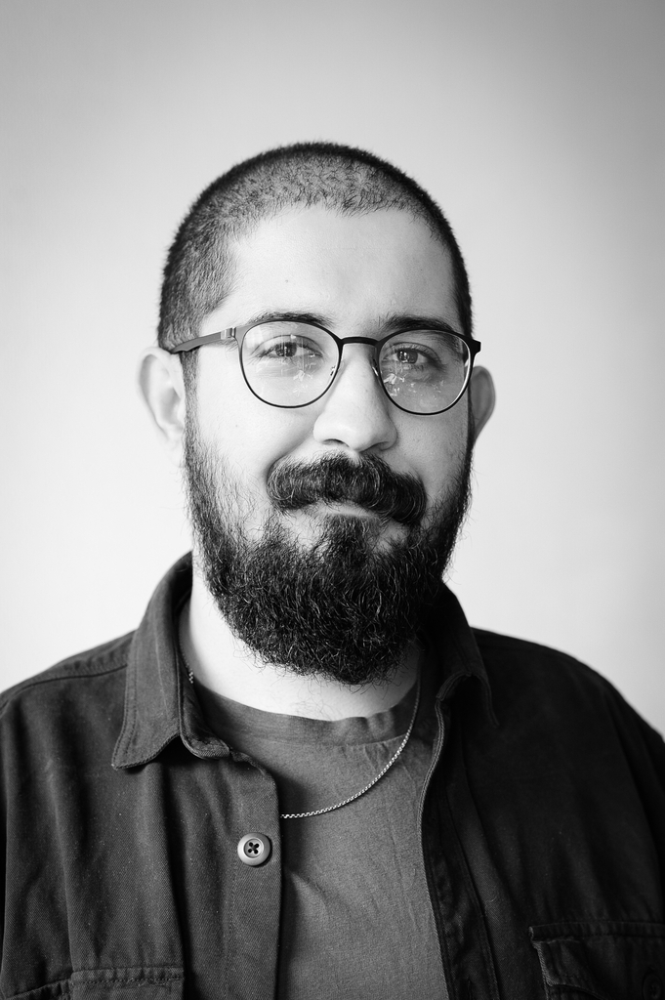

|  |
ObjectifsAPPRENTISSAGE INFORMATICIEN EXPLOITATION ET INFRASTRUCTUREMotivé et intéressé depuis toujours par ce domaine, je suis à la recherche d’un apprentissage en deuxième année en tant qu’informaticien. |
|
Données personelles
|
Formations2022 - à ce jour L'Ecole des Arches – CFC informaticien/ne, Lausanne
|
|
Langues
|
2020 - 2021 Powerhouse Romandie, Lausanne
|
|
Compétences informatiques
|
2020 - 2021 Formation en ligne « Swisscom Web Cours »
2019 - 2020 Centre de formation EVAM, Lausanne, Cours de français 2019 - 2020 Cours Python en ligne par Udemy 2014 - 2018 Université de Cukurova Adana, Turquie, Etudes de bachelor en Agronomie 2008 - 2013 3 Lycée ATBL, Cukurova, Adana, Turquie, Maturité option mathématiques, physique, chimie |
|
Loisirs
|
Expériences professionnelles08/01/2020 Centre professionnel du Nord Vaudois, Sainte-Croix stage d’information, en tant qu’informaticien 2015 - 2018 Divers emplois dans la restauration (serveur, barman), en Turquie pendant mes études |